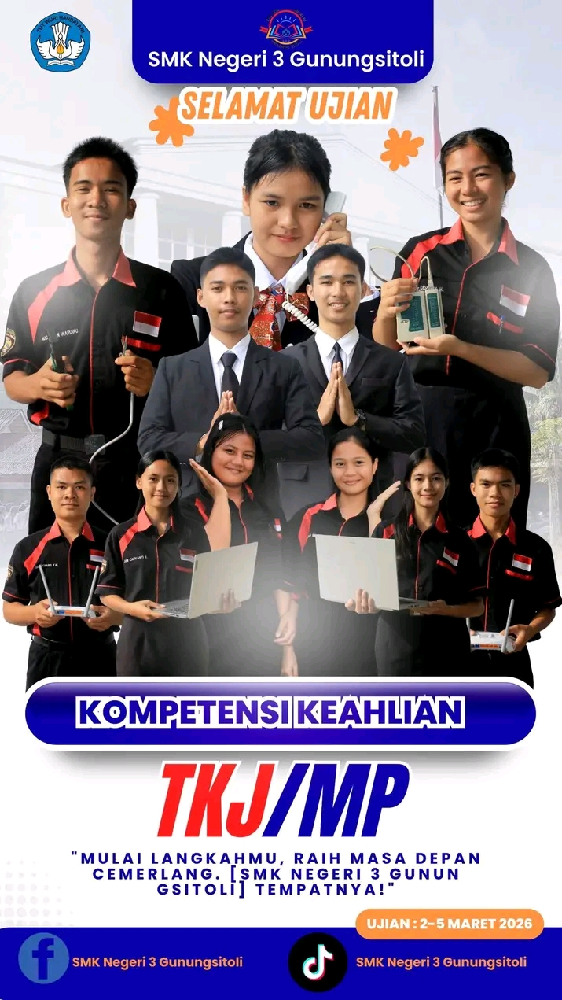
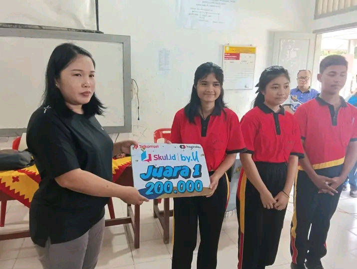
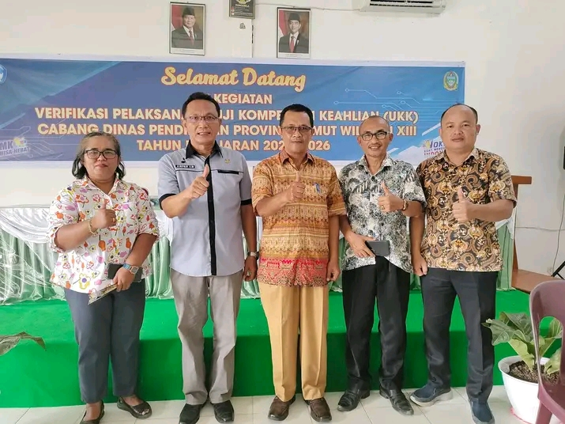

Ikuti perkembangan informasi kegiatan dan prestasi di SMK Negeri 3 Gunungsitoli

Siswa tingkat akhir rumpun program keahlian Teknik Komputer Jaringan dan Manajemen Perkantoran sukses menempuh ujian praktik penjaminan mutu industri...
Baca Selengkapnya →
Kabar membanggakan datang dari perwakilan siswa bidang IT Network Systems Administration yang berhasil mengamankan posisi podium tingkat kota tahun ini...
Baca Selengkapnya →
Sebagai upaya mempercepat penyerapan lulusan ke dunia kerja, pihak manajemen sekolah mengadakan sinkronisasi kurikulum berbasis industri bersama beberapa mitra strategis...
Baca Selengkapnya →